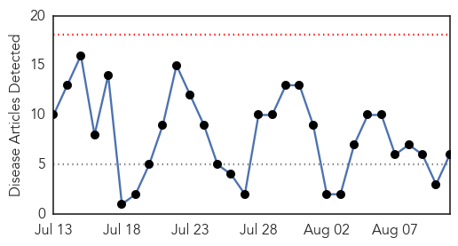
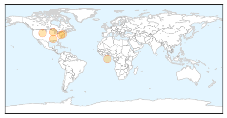

30 Day Trends
Web: 0 alerts, 0 warnings
Twitter: 1 alerts, 0 warnings
Top Articles:
- 0.997
- Waushara County reports first case of West Nile
- 0.939
- Mosquito season can bring diseases
- 0.939
- Protect Yourself From West Nile Virus With These ‘5 Ds’
- 0.930
- 4 new human cases of West Nile virus in Mississippi
- 0.928
- Diseases prompt caution from Wyoming State Veterinary Laboratory director
- 0.792
- West Nile Virus Found in Greenwich Mosquitoes
Top Tweets:
- 0.616
- Flavivirus news: West Nile virus discovered in Md. mosquitoes - WTOP: WTOPWest Nile virus disco... http://t.co/kxoyim8lJO pathogenposse
Web/News Articles
Tweets

Article Locations
Article Confidences